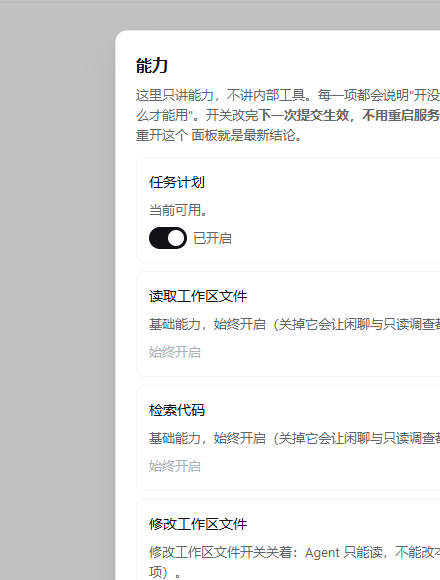

MANUAL · 第 7 章
设置项与生效时机
四组十二个分区，改完不用重启——但「什么时候生效」要分清，别在跑着的一轮里等一个不会马上生效的改动。
分区一览
「设置」左侧分四组，右侧对应分区。副标题写明了一条总口径：密钥只写入不回读。
| 分组 | 分区 | 管什么 |
|---|---|---|
| 模型与权限 | 模型连接 | 默认连接与每条连接的端点、模型、窗口、流式与图片能力。 |
| 权限 | 三档与「外部可写目录」。 | |
| 技能 | 本机发现的技能清单，可逐条开关；关掉不删文件，改完下一次提交生效。 | |
| 能力 | 各项能力的开关与依赖状态（读取文件、联网等属「始终开启」，没有开关）；缺依赖时说明安装方法，改完下一轮生效、不用重启。 | |
| 任务与工具 | 任务执行 | 每轮工具循环上限、命令超时、重复失败反馈阈值。 |
| 自动代码检索 | 只控制任务开始前的那次检索，不控制模型主动调用的 grep / glob。 | |
| 联网检索 | 搜索服务与密钥变量名；联网是常态能力，出厂即开。 | |
| 记忆 | 长期记忆 | 置信度与重要度阈值、遗忘天数、是否允许跨项目的用户级事实。 |
| 中期记忆 | 开关、召回条数、相似度阈值与时间衰减半衰期；启用前要先配好 Embedding。 | |
| 向量库与 Embedding | 本地 ONNX 或兼容 API、缓存目录、离线模式、端点与密钥变量名。 | |
| 通用 | 通用与外观 | 主题（浅色 / 深色 / 跟随系统）、文字大小、界面动画、发送快捷键、默认展开 Think。 |
| 高级配置 | 只读展示压缩、历史保留与 AGENTS 规则，不开放修改。 |

保存与撤销
- 底部三个动作：「保存」「取消修改」「恢复初始值」——恢复初始值后仍需再保存。
- 别的窗口已经保存过新版本时，这里会拒绝覆盖并保留你的草稿；刷新前先确认要保留哪一份。
- 设置写入本地设置库，不改
config.yaml；下次打开读到的是当前保存值。
什么时候生效
| 改的东西 | 生效时机 |
|---|---|
| 通用与外观 | 保存后立即生效。 |
| 执行、检索、记忆参数 | 从下一次新任务生效；正在执行或等待审批的任务保留提交时的值。 |
| 模型连接 | 编辑保存为新版本，从下一轮请求开始生效。 |
| 权限档位与授权 | 从下一轮请求开始生效；任务执行中沿用提交时的档位。 |
| 向量库缓存目录 | 页面提示「需重启后端」：保存并重启，重启后要再测一次，静态准备状态不证明权重已缓存。 |
几个容易误解的点
- 「自动代码检索」不是「模型不能搜代码」，它只管任务开始前注入的检索片段。
- 「测试当前配置」（Embedding）会真实生成一条向量，可能加载 / 下载本地模型或产生少量 API 费用；打开设置与保存本身不会。
- 向量库目录与集合名只读展示，不能从页面迁移、重建或清空。
- 高级配置是只读的：压缩阈值等参数目前不能在这里改。
最后更新 2026-10-19 · 适用版本 v1.0